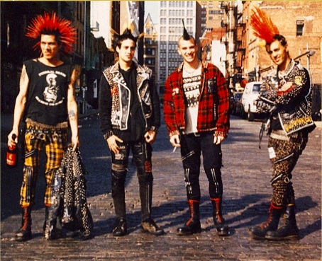
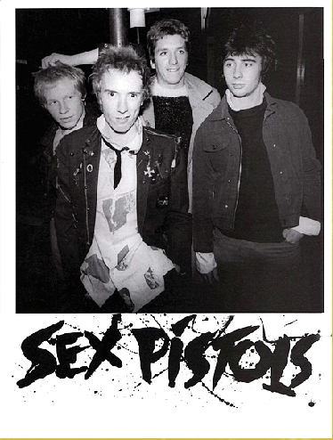

Punk
, wie kent het niet. Een subcultuur die ontstond bin-
nen de jongerencultuur in de jaren 70. Deze groep zetten zich af
tegen de regels, en stonden voor vrijheid voor het individu.
Daarnaast stonden ze centraal om hun opvallende uiterlijk wat
bestond uit veel zwart, dit werd samengedragen met veel studs
en kettingen.
Punk
kwam
vanuit
Engeland
naar
Nederland
toe,
dit
kwam
voort
uit
de
punkmu-
ziek.
Deze
punkmuziek
ont-
stond
in
eerste
instantie
in
de
Verenigde
Staten,
waarin
mensen
het
originele
ge-
voel
uit
de
jaren
zestig
wou-
den
herbeleven.
Later
kwam
deze
zogeheten
punkmu-
ziek
ook
steeds
meer
voor
in
Engeland
en
in
1977
dan
ook in Nederland.
In
Nederland
begon
de
sub-
cultuur
te
ontstaan
vanuit
jongeren
van
de
kunstaca-
demie.
Later
volgden
steeds
meer
jongeren
deze
subcul-
tuur,
en
waren
er
veel
ver-
schillende
stijlen
mogelijk
als
het
maar
anders
was
dan
de
rest.
Punk
stond
voor
op-
vallend
en
anders
dan
an-
dere.
Veel
punkers
maakte
zich
niet
veel
zorgen
over
hun
uiterlijk,
veel
kochten
dan
ook
kleding
bij
tweede-
handswinkeltjes.
Daarnaast
blowde,
rookten
en
dronken
punkers
wat
en
wanneer
zij
zelf wouden.
Haar,
was
voor
de
punkers
erg
belangrijk.
Hun
kapsel
was
een
verschijnsel
waar
veel
mensen
punkers
aan
herkenden.
Het
kapsel
was
vaak
groot
en
zwart,
of
juist
met
allemaal
kleuren.
De
ha-
nenkam
was
een
populair
verschijnsel
onder
de
pun-
kers,
deze
smeerden
zij
in
met
zeep
zodat
het
recht
overeind
bleef
staan.
Ook
getoupeerd
haar
was
erg
in
trek.
Verder
waren
veel
ver-
schillende
piercings
en
ta-
toeages
ook
erg
populair
onder de punkers.
De
punkers
hadden
een
op-
vallende
stijl,
wel
waren
zij
heel
creatief
en
creëerden
zij
van
veel
gekke
dingen
een
leuke
outfit.
Veel
outfits
waren
donker
en
geken-
merkt
met
scheuren.
De
kle-
ding
had
veel
versiersels
zoals
metaalwerk,
studs,
buttons
en
scheermesjes
etc.
Verder
droegen
de
pun-
kers
gewoon
T-shirts
en
jeans
net
als
ieder
ander,
maar
deze
zette
zij
allemaal
om
naar
hun
eigen
hand
doormiddel
van
scheuren
te
maken
in
de
kleding
en
stukken
kleding
af
te
knip-
pen.
Daarnaast
had
bijna
ie-
dere
punker
wel
een
leren
jack
in
zijn
kast
hangen,
ook
deze
versierde
zij
doormid-
del
van
studs
maar
ook
door
teksten
op
de
achterkant
van
het
jack
te
schilderen.
Als
het
maar
opvallend
was
en
anders
dan
andere.
Meis-

